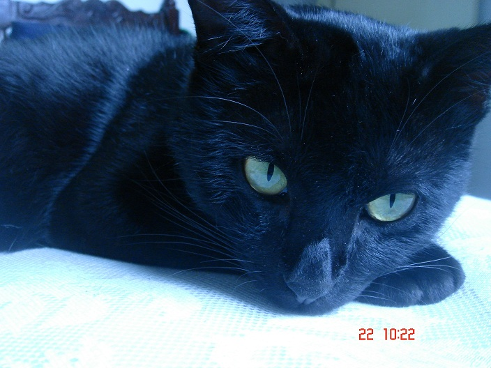
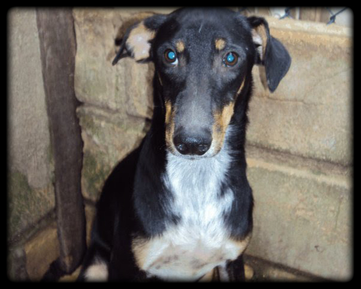
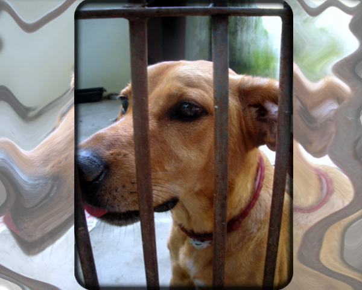
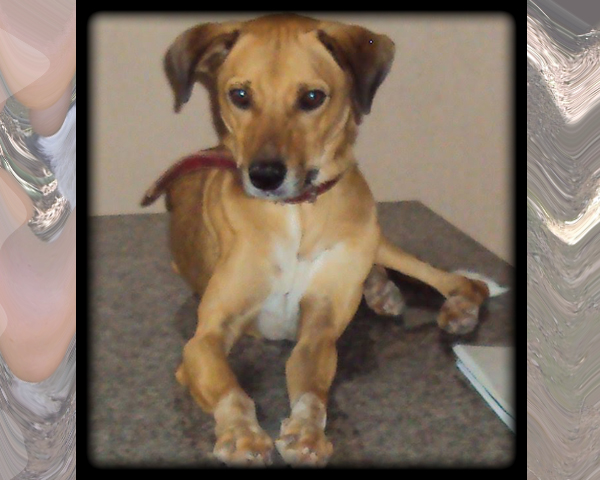
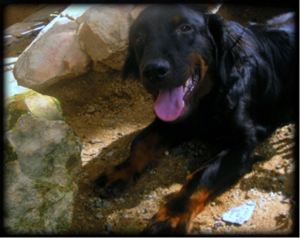
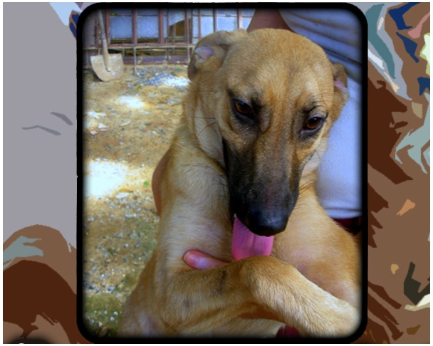

HOME
QUEM SOMOS
ADOÇÃO RESPONSÁVEL
ADOTE
NOTÍCIAS
PARCEIROS
SEJA UM VOLUNTÁRIO
CONTATO
LOGIN
Conheça alguns dos nossos amigos para adoção!
Quem não gostaria de contar com o amor de um deles?
Eles estão esperando por você!!!
Tel: (31) 3313-9601
Horário de atendimento: 2ª à 6ª feira, das 13h às 17h
Feira Permanente de Adoção aos Sábados, das 10h as 16h.
Agradecemos a atenção e carinho!
Se você gostou de algum dos animais aqui do site e deseja adotá-lo, entre em contato pelo tel: (31) 3313-9601. Lembramos que temos vários outros cães e gatos para adoção. Como são muitos, não é possível colocar todos eles.

Nome: Pedro
Sexo: Macho
Idade: 6 anos
Pelagem: curta
Porte: médio
Castrado(a): sim
Vacinado(a): sim
Desparasitado(a): sim

Nome: José
Sexo: Macho
Idade: 3 anos
Pelagem: curta
Porte: médio
Castrado(a): sim
Vacinado(a): sim
Desparasitado(a): sim

Nome: Magela
Sexo: Macho
Idade: adulto
Pelagem: curta
Porte: médio (grande)
Castrado(a): sim
Vacinado(a): sim
Desparasitado(a): sim

Nome: Paco
Sexo: Macho
Idade: 4 anos
Pelagem: curta
Porte: grande
Castrado(a): sim
Vacinado(a): sim
Desparasitado(a): sim

Nome: Nick
Sexo: Macho
Idade: 3 anos
Pelagem: curta
Porte: grande
Castrado(a): sim
Vacinado(a): sim
Desparasitado(a): sim

Nome: Emily
Sexo: Fêmea
Idade: 2 anos
Pelagem: curta
Porte: médio
Castrado(a): sim
Vacinado(a): sim
Desparasitado(a): sim